bayesnec
The bayesnec is an R package to fit concentration(dose) — response curves to toxicity data, and derive No-Effect-Concentration (NEC), No-Significant-Effect-Concentration (NSEC), and Effect-Concentration (of specified percentage ‘x’, ECx) thresholds from non-linear models fitted using Bayesian MCMC fitting methods via brms (Bürkner 2017; Bürkner 2018) and stan. The package is an adaptation and extension of an initial package jagsNEC (Fisher, Ricardo, and Fox 2020) which was based on the R2jags package (Su and Yajima 2015) and jags (Plummer 2003).
Background
Bayesian model fitting can be difficult to automate across a broad range of usage cases, particularly with respect to specifying valid initial values and appropriate priors. This is one reason the use of Bayesian statistics for NEC estimation (or even ECx estimation) is not currently widely adopted across the broader ecotoxicological community, who rarely have access to specialist statistical expertise. The bayesnec package provides an accessible interface specifically for fitting NEC models and other concentration—response models using Bayesian methods. A range of models are specified based on the known distribution of the “concentration” or “dose” variable (the predictor, x) as well as the “response” (y) variable. The model formula, including priors and initial values required to call a brms model are automatically generated based on information contained in the supplied data. While the distribution of the x and y variables can be specified directly, bayesnec will automatically ‘guess’ the correct distribution to use based on the characteristics of the provided data.
This project started with an implementation of the NEC model based on that described in (Pires et al. 2002) and (Fox 2010) using R2jags (Fisher, Ricardo, and Fox 2020). The package has been further generalised to allow a large range of response variables to be modelled using the appropriate statistical distribution. While the original jagsNEC implementation supported Gaussian, Poisson, Binomial, Gamma, Negative Binomial and beta response data bayesnec additionally supports the Beta-Binomial distribution, and can be easily extended to include any of the available brms families. We have since also further added a range of alternative NEC model types, as well as a range of concentration—response models (such as 4-parameter logistic and Weibull models) that are commonly used in frequentist packages such as drc(Ritz et al. 2016). These models do not employ segmented regression (i.e., use of a ‘step’ function) but simply models the response as a smooth function of concentration.
Specific models can be fit directly using bnec, which is what we discuss here. Alternatively, it is possible to fit a custom model set, a specific model set, or all the available models. Further information on fitting multi-models using bayesnec can be found in the Multi model usage vignette. For detailed information on the models available in bayesnec see the Model details vignette.
Important information on the current package is contained in the bayesnec help-files and the Model details vignette.
This package is currently under development. We are keen to receive any feedback regarding usage, and especially bug reporting that includes an easy to run self-contained reproducible example of unexpected behaviour, or example model fits that fail to converge (have poor chain mixing) or yield other errors. Such information will hopefully help us towards building a more robust package. We cannot help troubleshoot issues if an easy-to-run reproducible example is not supplied.
Installation
To install the latest release version from CRAN use
install.packages("bayesnec")The current development version can be downloaded from GitHub via
if (!requireNamespace("remotes")) {
install.packages("remotes")
}
remotes::install_github("open-aims/bayesnec")Because bayesnec is based on brms and Stan, a C++ compiler is required. The program Rtools comes with a C++ compiler for Windows. On Mac, you should install Xcode. See the prerequisites section on this link for further instructions on how to get the compilers running.
To run this vignette, we will also need some additional packages
Examples
Fitting the neclin model using bnec
Here we include some examples showing how to use the package to fit an NEC model to binomial, proportional, count and continuous response (y) data. The examples are those used at: https://github.com/gerard-ricardo/NECs/blob/master/NECs, but here we are showing how to fit models to these data using the bayesnec package. Note however, the default behaviour in bayesnec is to use native link functions for each family, thus we fit the “neclin” model for these examples, rather than the “nec3param” model which is not valid for use with the logit or log link (see the Model details vignette for more information and the models available in bayesnec).
Binomial data
The response variable y is considered to follow a binomial distribution when it is a count out of a total (such as the percentage survival of individuals, for example). First, we read in the binomial example from pastebin, prepare the data for analysis, and then inspect the dataset as well as the “concentration” or x variable, in this case raw_x.
binom_data <- "https://pastebin.com/raw/zfrUha88" %>%
read.table(header = TRUE, dec = ",", stringsAsFactors = FALSE) %>%
dplyr::rename(raw_x = raw.x) %>%
dplyr::mutate(raw_x = as.numeric(as.character(raw_x)),
log_x = log(raw_x))
str(binom_data)
#> 'data.frame': 48 obs. of 4 variables:
#> $ raw_x: num 0.1 0.1 0.1 0.1 0.1 0.1 6.25 6.25 6.25 6.25 ...
#> $ suc : int 101 106 102 112 58 158 95 91 93 113 ...
#> $ tot : int 175 112 103 114 69 165 109 92 99 138 ...
#> $ log_x: num -2.3 -2.3 -2.3 -2.3 -2.3 ...
range(binom_data$raw_x)
#> [1] 0.1 400.0
hist(binom_data$raw_x)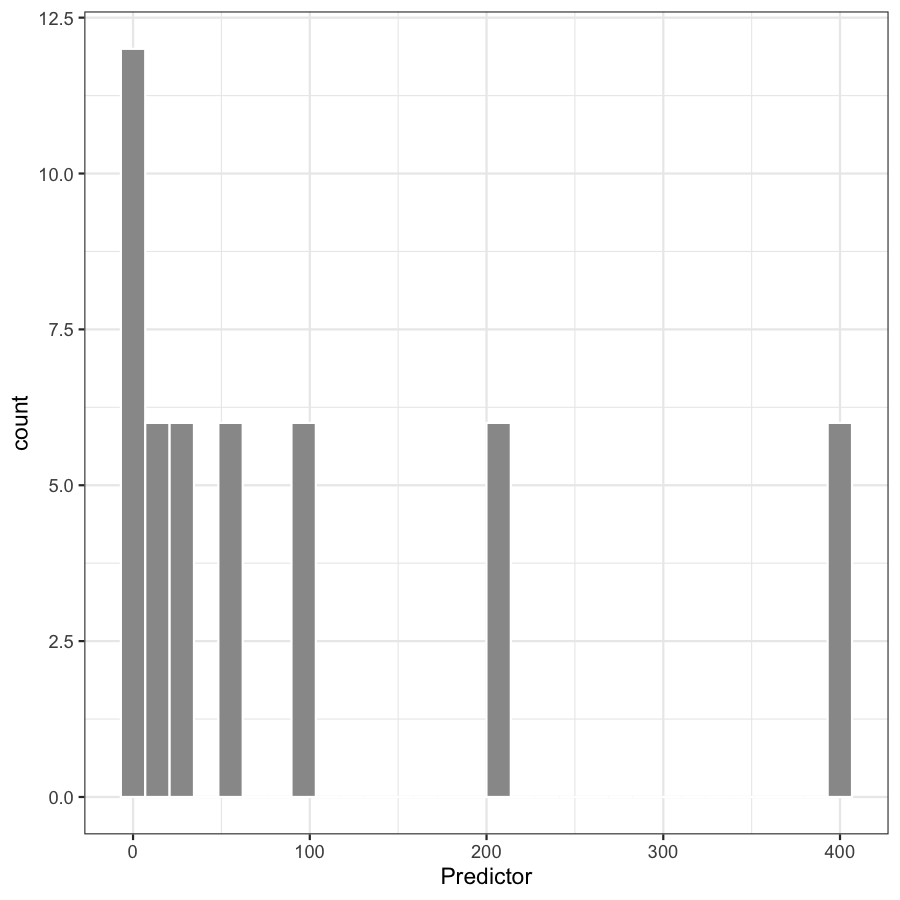
In this case for x, lowest concentration is 0.1 and the highest is 400. The data are right skewed and on the continuous scale. This type of distribution for the x data are common for concentration—response experiments, where the x ‘concentration’ data are the concentration of contaminants, or dilutions. The current default in bayesnec is to estimate the appropriate distribution(s) and priors for the family argument, but it is possible to supply family directly. We are going to model this with the x data on a log scale, as this is the scaling clearly used in the experimental design and thus will provide more stable results.
The data are clearly binomial, with the column suc—indicating the number of ‘successes’ in the binomial call, with tot clearly indicating the number of trials.
The main ‘working’ function in bayesnec is the function bnec, which calls the other necessary functions and fits the brms model. We run bnec by supplying data: a data.frame containing the data for the model fitting, here, binom_data; x_var: the name of the column in data which contains the concentration data or ‘x’ data to be used in the NEC model fit, and y_var: the name of the column in data which contains the response or ‘y’ data to be used in the NEC model fit. In our example here, as this is binomial, we must also supply trials_var, which is the name of the column in data which contains the number of trials in the binomial call.
bnec will guess the data types for use, although as mentioned above we could manually specify family as “binomial”. bnec will also generate appropriate priors for the brms model call, although these can also be specified manually (see the Priors vignette for more details).
library(bayesnec)
set.seed(333)
exp_1 <- bnec(data = binom_data, x_var = "log_x",
y_var = "suc", model = "neclin",
trials_var = "tot")The function shows the progress of the brms fit and returns the usual brms output (with a few other elements added to this list). The function plot(exp_1$fit) can be used to plot the chains, so we can assess mixing and look for other potential issues with the model fit. Initially bayesnec will attempt to use starting values generated for that type of model formula and family. It will run the iterations and then test if all chains are valid. If the model does not have valid chains bayesnec with try up to n_tries more times to fit the data using either bayesnec generated or brms default initial values and obtain a successfully fitted model with good mixing. If no model is successfully fit an error will be returned indicating the model could not be fit successfully.
plot(exp_1$fit)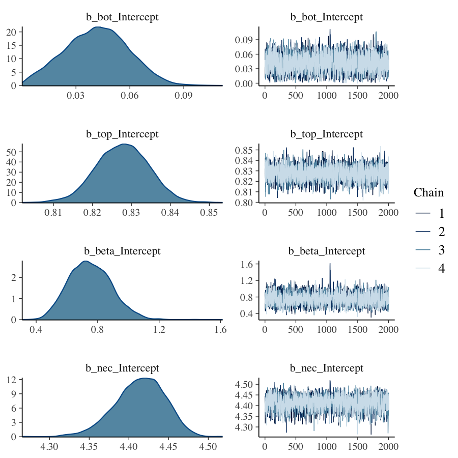
In our example, the chains are well mixed, and the probability density plots look good. We can also run a pairs plot that can help to assess issues with identifiability, and which also looks ok. There are a range of other model diagnostics that can be explored for [brms] model fits, using the $fit syntax. We encourage you to explore the rich material already on github regarding use and validation of [brms] (https://github.com/paul-buerkner/brms) models.
pairs(exp_1$fit)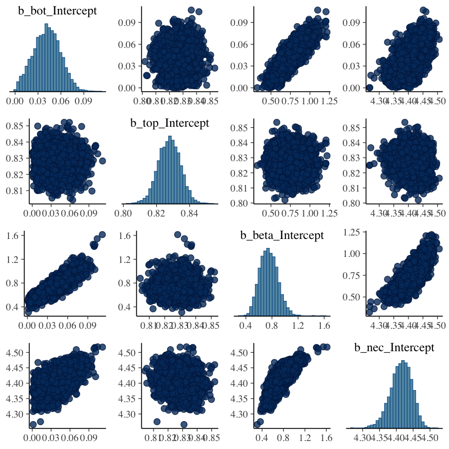
We can see the summary of our fitted model parameters using:
summary(exp_1)
#> Object of class bayesnecfit containing the following non-linear model: neclin
#>
#> Family: binomial
#> Links: mu = logit
#> Formula: y | trials(trials) ~ top - exp(slope) * (x - nec) * step(x - nec)
#> top ~ 1
#> slope ~ 1
#> nec ~ 1
#> Data: structure(list(x = c(-2.30258509299405, -2.3025850 (Number of observations: 48)
#> Samples: 4 chains, each with iter = 10000; warmup = 9000; thin = 1;
#> total post-warmup samples = 4000
#>
#> Population-Level Effects:
#> Estimate Est.Error l-95% CI u-95% CI Rhat Bulk_ESS Tail_ESS
#> top_Intercept 1.69 0.05 1.58 1.80 1.00 2043 1977
#> slope_Intercept 0.66 0.04 0.58 0.73 1.00 1892 1858
#> nec_Intercept 3.72 0.06 3.60 3.83 1.00 1889 1822
#>
#> Samples were drawn using sample(hmc). For each parameter, Bulk_ESS
#> and Tail_ESS are effective sample size measures, and Rhat is the potential
#> scale reduction factor on split chains (at convergence, Rhat = 1).Note the Rhat values in this example are one, indicating convergence.
The function plot can be used to plot the fitted model. You can also make your own plot from the data included in the returned bayesnecfit object from the call to bnec. Here we use the default plot method from bayesnec, where we add the ‘exp’ function to plot the tick labels on the original scaling of the concentration data.
plot(exp_1, lxform = exp)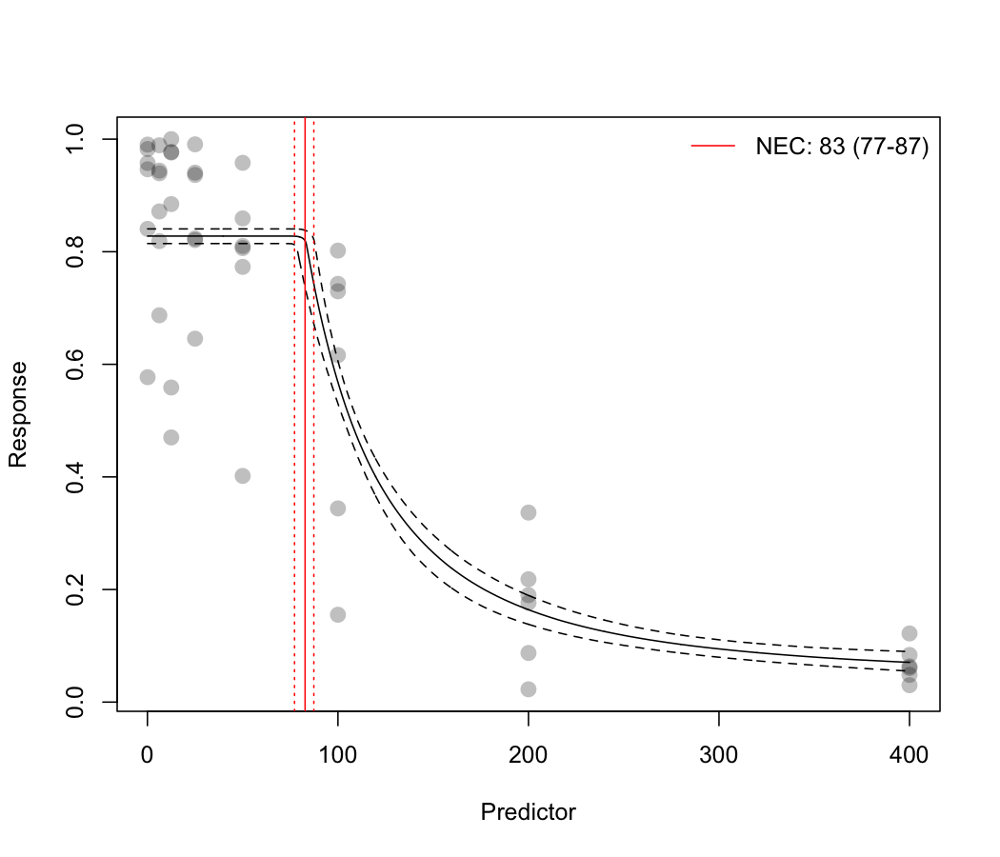
Alternatively, we can use the built in brms methods to plot the brms fit directly using their function conditional_effects.
df <- exp_1$fit$data %>%
dplyr::mutate(prop = y / trials)
plot(brms::conditional_effects(exp_1$fit))[[1]] +
geom_point(data = df, aes(x = x, y = prop),
inherit.aes = FALSE)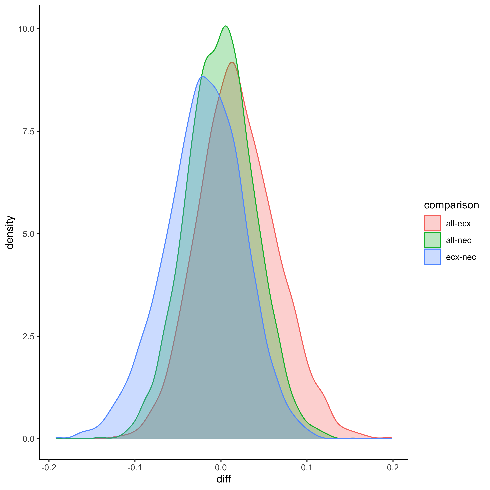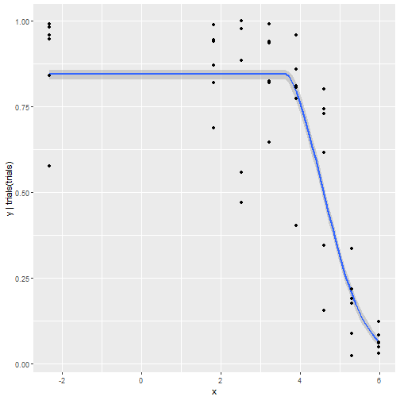
There are many built in methods available for brmsfit objects and we encourage you to make use of these in full.
This model fit doesn’t look great. You can see that the error bounds around the fit are far too narrow for this data given the variability among the points, suggesting over dispersion of this model (meaning that the data are more variable than this model fit predicts). An estimate of dispersion is provided by bayesnec, and this can be extracted using exp_1$dispersion. Values >1 indicate overdispersion and values <1 indicate underdispersion. In this case the overdispersion value is much bigger than 1, suggesting extreme overdispersion (meaning our model doesn’t properly capture the true variability represented in this data). We would need to consider alternative ways of modelling this data using a different distribution, such as the Beta-Binomial.
exp_1$dispersion
#> Estimate Q2.5 Q97.5
#> 19.52723 12.93015 30.11590Beta-Binomial
The Beta-Binomial model can be useful for overdispersed Binomial data.
set.seed(333)
exp_1b <- bnec(data = binom_data, x_var = "log_x",
y_var = "suc", model = "neclin",
family = beta_binomial2,
trials_var = "tot")Fitting this data with the betabinomial2 yields a much more realistic fit in terms of the confidence bounds and the spread in the data. Note that a dispersion estimate is not provided here, as overdispersion is only relevant for Poisson and Binomial data.
plot(exp_1b, lxform = exp)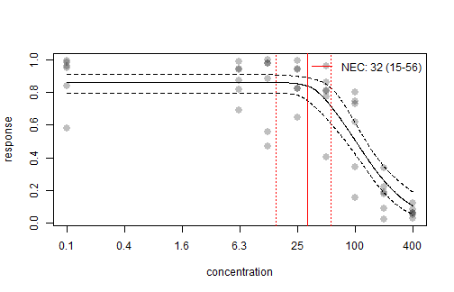
exp_1b$dispersion
#> [1] NA NA NANow we have a good fit to these data, we can interpret the results. The estimated NEC value can be obtained directly from the fitted model object, using exp_1b$nec, or we can plot the posterior distribution of the NEC values.
exp_1b$nec
#> Estimate Q2.5 Q97.5
#> 3.466815 2.716585 4.025337
hist(exp_1b$nec_posterior)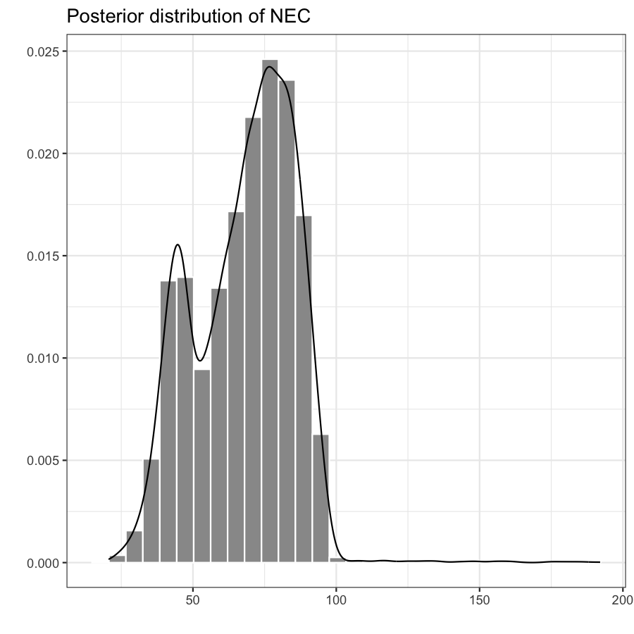
ECx estimates can also be obtained from the NEC model fit, using the function ecx. Note these may differ from a typical 4-parameter non-linear model, as the NEC model is a broken stick non-linear regression and will often fall more sharply than a smooth 4-parameter non-linear curve. See both the Model details and Comparing posterior predictions vignettes for more information.
ecx(exp_1b)
#> ec_10_Q50 ec_10_Q2.5 ec_10_Q97.5
#> 3.841155 3.301503 4.272878
#> attr(,"precision")
#> [1] 1000A summary method has also been developed for bayesnecfit objects that gives an overall summary of the model statistics, which also include the estimate for NEC, as the nec_intercept population level effect in the model.
summary(exp_1b)
#> Object of class bayesnecfit containing the following non-linear model: neclin
#>
#> Family: beta_binomial2
#> Links: mu = logit; phi = identity
#> Formula: y | trials(trials) ~ top - exp(slope) * (x - nec) * step(x - nec)
#> top ~ 1
#> slope ~ 1
#> nec ~ 1
#> Data: structure(list(x = c(-2.30258509299405, -2.3025850 (Number of observations: 48)
#> Samples: 4 chains, each with iter = 10000; warmup = 9000; thin = 1;
#> total post-warmup samples = 4000
#>
#> Population-Level Effects:
#> Estimate Est.Error l-95% CI u-95% CI Rhat Bulk_ESS Tail_ESS
#> top_Intercept 1.82 0.22 1.36 2.28 1.00 2194 2324
#> slope_Intercept 0.44 0.18 0.06 0.77 1.00 1626 1424
#> nec_Intercept 3.47 0.31 2.72 4.03 1.00 1655 1827
#>
#> Family Specific Parameters:
#> Estimate Est.Error l-95% CI u-95% CI Rhat Bulk_ESS Tail_ESS
#> phi 5.77 1.31 3.54 8.88 1.00 1567 1775
#>
#> Samples were drawn using sample(hmc). For each parameter, Bulk_ESS
#> and Tail_ESS are effective sample size measures, and Rhat is the potential
#> scale reduction factor on split chains (at convergence, Rhat = 1).Beta data
Sometimes the response variable is distributed between 0 and 1 but is not a straight-forward Binomial because it is a proportion on the continuous scale. A common example in coral ecology is maximum quantum yield (the proportion of light used for photosynthesis when all reaction centres are open) which is a measure of photosynthetic efficiency calculated from PAM data. Here we have a proportion value that is not based on trials and successes. In this case there are no theoretical ‘trials’ and the data must be modelled using a beta distribution.
prop_data <- "https://pastebin.com/raw/123jq46d" %>%
read.table(header = TRUE, dec = ",", stringsAsFactors = FALSE) %>%
dplyr::rename(raw_x = raw.x) %>%
dplyr::mutate(raw_x = log(as.numeric(as.character(raw_x)) + 1),
resp = as.numeric(as.character(resp)))
set.seed(333)
exp_2 <- bnec(data = prop_data, x_var = "raw_x",
y_var = "resp", model = "neclin")
plot(exp_2$fit)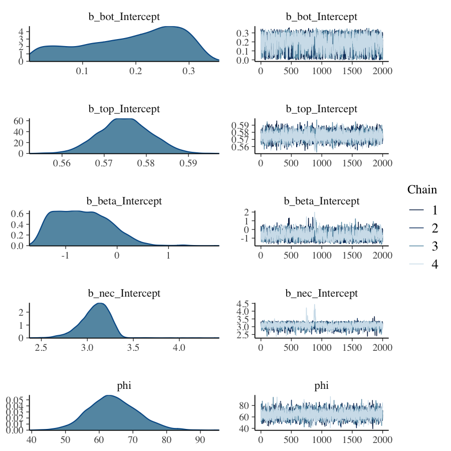
plot(exp_2)
Poisson data
Where data are a count (of, for example, individuals or cells) y is Poisson. Such data are distributed from 0 to Inf and are integers. First we mimic count data based on the package’s internal dataset, and make it overdispersed. Then we plot the “concentration” (or x) data.
data(nec_data)
set.seed(330)
count_data <- nec_data %>%
dplyr::mutate(
y = (y * 100 + rnorm(nrow(nec_data), 0, 15)) %>%
round %>%
as.integer %>%
abs
)
str(count_data)
#> 'data.frame': 100 obs. of 2 variables:
#> $ x: num 1.019 0.816 0.371 0.401 1.295 ...
#> $ y: int 109 116 88 101 95 89 66 78 101 80 ...
range(count_data$x)
#> [1] 0.03234801 3.22051966
par(mfrow = c(1, 2))
hist(count_data$x, xlab = "'x' variable", main = "")
hist(count_data$y, xlab = "Total counts", main = "")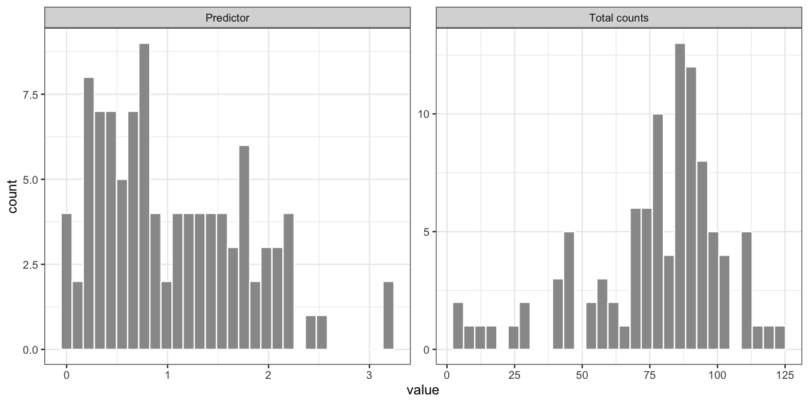 First, we supply bnec with data (here count_data), and specify x_var and y_var. As we have integers of 0 and greater, the family is "poisson". The default behaviour to guess the variable types works for this example.
exp_3 <- bnec(data = count_data, x_var = "x", y_var = "y", model = "neclin")We first plot the model chains and parameter estimates to check the fit.
plot(exp_3$fit)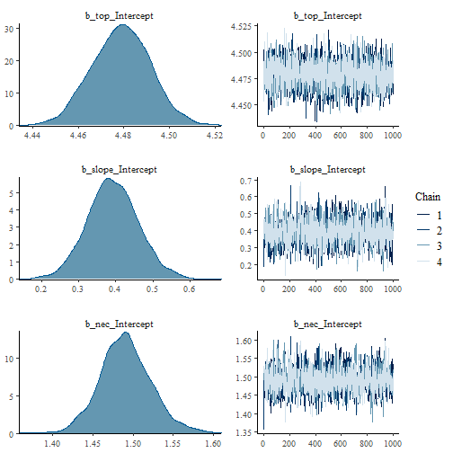
plot(exp_3)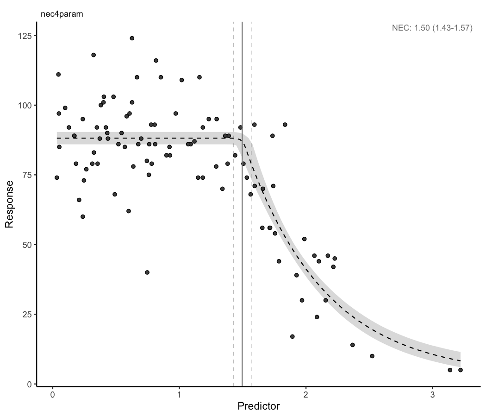
exp_3$dispersion
#> Estimate Q2.5 Q97.5
#> 2.874793 2.228805 3.848661The chains look ok; however, our plot of the fit is not very convincing. The model uncertainty is very narrow, and this does not seem to be a particularly good model for these data. Note that the dispersion estimate is much greater than one, indicating serious overdispersion. In this case we can try a negative binomial family.
Negative binomial
When count data are overdispersed and cannot be modelled using the Poisson family, the Negative binomial family is generally used. We can do this by calling family = "negbinomial".
exp_3b <- bnec(data = count_data, x_var = "x", y_var = "y",
family = "negbinomial", model = "neclin")The resultant plot seems to indicate the negative binomial family works better in terms of dispersion (more sensible wider confidence bands) however it still does not seem to be a great model for these data. See the Model details and Multi model usage vignettes for options to fit other models to these data.
plot(exp_3b$fit)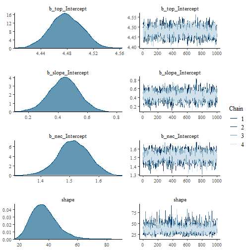
plot(exp_3b)
Measure data
Where data are a measured variable y is family gamma. Good examples of gamma distributed data include measures of body size, such as length, weight, or area. Such data are distributed from 0+ to Inf and are continuous. Here we use the nec_data supplied with bayesnec with y on the exponential scale to ensure the right data range for a gamma as an example.
exp_4 <- bnec(data = measure_data, x_var = "x",
y_var = "measure", model = "neclin")
plot(exp_4$fit)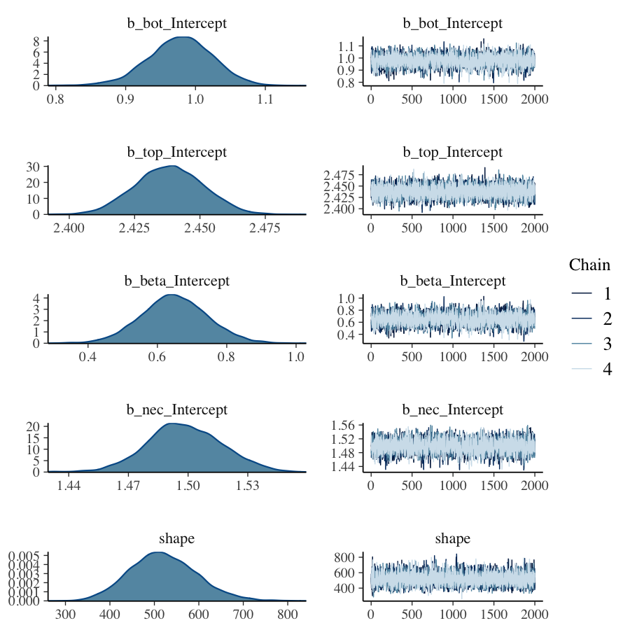
plot(exp_4)
summary(exp_4)
#> Object of class bayesnecfit containing the following non-linear model: neclin
#>
#> Family: gamma
#> Links: mu = log; shape = identity
#> Formula: y ~ top - exp(slope) * (x - nec) * step(x - nec)
#> top ~ 1
#> slope ~ 1
#> nec ~ 1
#> Data: structure(list(x = c(1.01874617094183, 0.815747457 (Number of observations: 100)
#> Samples: 4 chains, each with iter = 10000; warmup = 9000; thin = 1;
#> total post-warmup samples = 4000
#>
#> Population-Level Effects:
#> Estimate Est.Error l-95% CI u-95% CI Rhat Bulk_ESS Tail_ESS
#> top_Intercept 0.89 0.01 0.88 0.91 1.00 2447 2316
#> slope_Intercept -0.59 0.04 -0.68 -0.51 1.00 2379 2217
#> nec_Intercept 1.31 0.04 1.23 1.38 1.00 2078 2197
#>
#> Family Specific Parameters:
#> Estimate Est.Error l-95% CI u-95% CI Rhat Bulk_ESS Tail_ESS
#> shape 249.08 35.74 184.67 327.10 1.00 3076 2356
#>
#> Samples were drawn using sample(hmc). For each parameter, Bulk_ESS
#> and Tail_ESS are effective sample size measures, and Rhat is the potential
#> scale reduction factor on split chains (at convergence, Rhat = 1).In this case our model has converged well, although it is perhaps not the best model to fit. See the Model details and Multi model usage vignettes for options to fit other models to these data.
References
Bürkner, Paul Christian. 2017. “brms: An R package for Bayesian multilevel models using Stan.” Journal of Statistical Software 80 (1): 1–28. https://doi.org/10.18637/jss.v080.i01.
Bürkner, Paul-Christian. 2018. “Advanced Bayesian Multilevel Modeling with the R Package brms.” The R Journal 10 (1): 395–411. https://doi.org/10.32614/RJ-2018-017.
Fisher, Rebecca, Gerard Ricardo, and David Fox. 2020. “Bayesian concentration-response modelling using jagsNEC.” https://doi.org/10.5281/ZENODO.3966864.
Fox, David R. 2010. “A Bayesian approach for determining the no effect concentration and hazardous concentration in ecotoxicology.” Ecotoxicology and Environmental Safety 73 (2): 123–31.
Plummer, Martyn. 2003. “JAGS: A program for analysis of Bayesian graphical models using Gibbs sampling.” In Proceedings of the 3rd International Workshop on Distributed Statistical Computing (DSC 2003), 1–10. Technische Universität Wien, Vienna, Austria: Achim Zeileis.
Ritz, Christian, Florent Baty, Jens C Streibig, and Daniel Gerhard. 2016. “Dose-Response Analysis Using R.” PLoS ONE 10 (12): e0146021. https://doi.org/10.1371/journal.pone.0146021.
Su, Yu-Sung, and Masanao Yajima. 2015. R2jags: Using R to Run ’JAGS’. https://CRAN.R-project.org/package=R2jags.